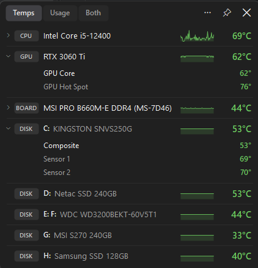
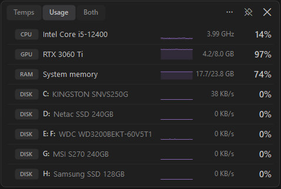

Every temperature on your PC, in one small overlay
CPU, GPU, NVMe / SSD / HDD, RAM and motherboard temperatures, plus CPU, GPU and RAM usage, in a lightweight window you can pin on top of games and apps. Free for Windows 11 and 10.

Everything you need, nothing you don't
🌡️ All temperatures
CPU package and cores, GPU core and hot spot, every NVMe/SATA SSD and hard drive by drive letter, motherboard/VRM/chipset, RAM and AIO liquid temperature.
📌 Pin on top
An always-on-top overlay like the Xbox Game Bar widget, with adjustable transparency, click-through and a compact mode.
📊 Usage too
Switch between Temps, Usage and Both: CPU load and clock, GPU load and VRAM, RAM used, disk activity, each with a 60-second graph.
🟢 Clear warnings
Green, amber and red limits tuned per device type. NVMe drives use their own reported warning temperature.
🔔 Tray icon
Your CPU temperature as a live number in the system tray, with every device in the tooltip.
🪶 Lightweight
About 40 MB of RAM and 0.2% CPU at a one-second refresh. Starts with Windows if you want it to.

Temperatures and usage, side by side
One click in the header switches views. "Both" splits the window into a temperature panel and a usage panel, each with its own graph, so you can see what's hot and why.
FAQ
How do I check my CPU temperature on Windows 11 or 10?
Windows doesn't show it anywhere. Install AllTemp: the first row shows your CPU package temperature (click it for every core), and the tray icon shows it as a live number.
How do I check my SSD, NVMe or hard drive temperature?
AllTemp lists every drive with its drive letters and temperature, read from the drive's SMART data. For NVMe drives, "Composite" is the overall temperature; the extra sensors are usually the controller, which normally runs hotter.
Can I keep temperatures on screen while gaming?
Yes. Pin AllTemp and it stays on top of other windows with adjustable transparency, optional click-through and a compact mode.
Why does it need administrator rights and a driver?
Windows only lets admin programs read disk SMART data and low-level sensors. CPU, RAM and motherboard sensors also need a kernel driver, as with HWMonitor and HWiNFO. AllTemp uses the free, signed, open-source PawnIO driver, which is optional: GPU and disk temperatures work without it.
Windows says "Windows protected your PC". Is it safe?
AllTemp isn't code-signed yet, so SmartScreen warns about new apps. Click More info → Run anyway. All the source code is on GitHub.
Something on my PC isn't shown. What can I do?
Run AllTemp.exe --dump sensors.txt and attach the file to a GitHub issue.